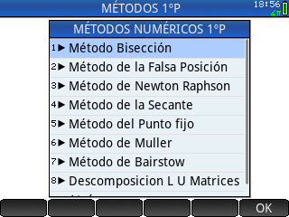

Métodos numéricos para calculadora HP-PRIME 1º parte

Programa para resolver ecuaciones no lineales y sistemas de ecuaciones lineales mediante descomposicion de matrices por diferentes métodos.
El programa ha sido elaborado en base al libro Métodos Numéricos para Ingenieros del autor: Steven C. Chapra
Contenido:
- Método de bisección
- Método de la falsa posición
- Método de Newton Raphson
- Método de la secante
- Método del punto fijo
- Método de muller
- Método de bairstow
- Descomposición LU de matrices
- Descomposición LU método de Doolitle
- Descomposición LU método de Crout
- Descomposición LU método de Cholesky
Video con varios ejemplos